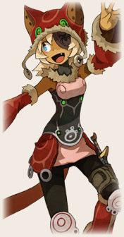
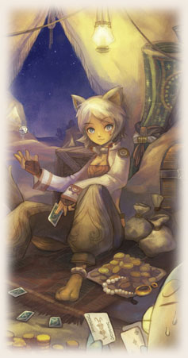
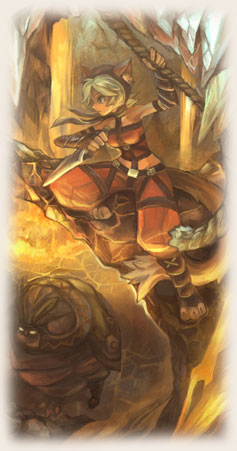

|  | Treasure Hunter แมวเหมียวนักล่าสมบัติ ใช้ความคล่องแคล่วปราดเปรียว และสัมผัสไวกับสิ่งมีค่าจะมีใครเกินฮีโร่สาวคนนี้ เพราะมีความว่องไวสูง ทำให้ประชิดคู่ต่อสู้ในพริบตา ปามีดโจมตีจากระยะไกลได้และยังมีสกิลบัฟ และดีบัฟสำหรับก่อกวนอีกด้วย หากเพื่อนๆ ชอบการก่อกวนแล้วละก็ให้เพื่อนๆ ก็เลือกเล่นแมวนี้แหละครับ นอกจากนี้หากเลือกแมวเป็นกองสนับสนุนในทีมของเรา ยังยืมพลังแมวมาทำความเสียหายให้เป้าหมายได้ด้วยนะ! |
|||||||||||||||||||||
|
||||||||||||||||||||||


|  | Gambler แมวสาวสวยผู้ชื่นชอบการเสี่ยงโชค และดูเหมือนว่าเธอจะมีโชคพร้อมๆ กับเจ้าเล่ห์มากด้วย ด้วยทักษะพิเศษที่สามารถใช้อุปกรณ์เสี่ยงโชคต่างๆ ไม่ว่าจะไป ไพ่, ลูกเต๋า และลูเล็ต ทำให้ศัตรูที่ตามเธอไม่ทันเสียหลักไปแบบไม่รู้ตัว หากคุณชอบ และรักที่จะเสี่ยงไปกับเธอแล้ว ก็ขอชวนให้มาเป็น Gambler ด้วยกัน! |
|||||||||||||||||||||||||||||||||
|
||||||||||||||||||||||||||||||||||


|  | โจรสาว Assassin มีดสั้นคืออาวุธหลักคู่กายของเธอ ด้วยความรวดเร็วปราชเปรี่ยว ไม่มีใครตามทัน ทำให้เธอกระโดดหนีอันตรายได้ง่ายๆ จุดเด่นของ Assassin อยู่ที่ความสามารถในการกระโดด และปามีดเพื่อดีบัพศัตรู! |
|||||||||||||||||||||||||||
|
||||||||||||||||||||||||||||